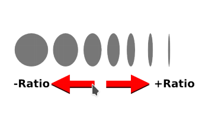

MyPaint Brush Engine¶

MyPaint is a free painting program that comes with a lot of specific brushes. Krita can use those brushes for painting using the MyPaint brush engine.
Dynamic Inputs¶
Dynamic Inputs are a way for MyPaint to get information of the external devices as a drawing tablet; for instance the pressure over the drawing tablet, the speed of pencil movement, the pencil tilt .. etc. They are equivalent to Sensors in Krita.
MyPaint has 9 inputs:
- Pressure
The pressure handled by a tablet. Typically in the range 0.0 to 1.0.
- Fine Speed
How quickly the stylus is moving. This can vary quite a lot.
- Gross Speed
Similar to fine speed but it changes very slowly.
- Random
Fast and random noise, changes with every brush stroke.
- Stroke
This input goes slowly from 0.0 to 1.0 while the stroke is being applied. This is related to "stroke duration" and "stroke holdtime" settings.
- Direction
This input defines the angle of a stroke, in degrees.
- Declination
This input defines the declination of the stylus tilt. This is the same as tilt-elevation in Krita.
- Ascension
Straight pen ascension. When the active tip points to it, it is 0. When the pen turns 90 degrees clockwise is +90. When it turns 90 degrees counterclockwise is -90. This is the same as tilt-direction in Krita.
- Custom
This is a user-defined input. It is related to the "customized input" setting.
Parameters¶
Has the following parameters:
Basic¶
Radius¶
This is to set the radius of the brush. Please note that all of the mypaint radii are logarithmic. For instance, if you are setting the radius of a preset to say, 2.0 then the actual radius of the preset is going to be e^(2.0) which is equal to 7.389. This makes the size of the brush equal to 14.78. So, we can say that mypaint_radius = log(actual_radius).

Eraser¶
If this option is checked the brush will act as an eraser.
Radius by Random¶
This option is used to generate a brush preset whose radii and opacity change randomly during the stroke. This should not be confused with the random dynamic option in the radius setting.
Anti Aliasing¶
This option is used to smoothen the edges of the brush and remove the jagging effect. Most useful for very small presets.
Elliptical Dab: Angle¶
Sets the angle of the brush dabs. Gives the best results for brushes with a low ratio and a direction filter, and allows for strokes akin to a calligraphic pen.
Elliptical Dab: Ratio¶
This option is used to change the aspect ratio of dab.
Direction Filter¶
This option is used to make the dabs adhere to a specific vector direction. In simple words, at times you might find the dabs not following the vector path of your strokes, this setting helps us rectify that.
Color¶
Change color Hue¶
This option is used to shift the hue in a clockwise or anti-clockwise direction.
Change color Lightness¶
This option is used to change color luminance using the HSL color model.
Change color Value¶
This option is used to change color value (brightness, intensity) in HSV color model.
Change color Saturation HSL¶
This option is used to change color saturation using HSL color model.
Change color Saturation HSV¶
This option is used to change color saturation using HSV color model.
Speed¶
Fine Speed Gamma¶
This option is used to change the reaction of the fine speed input to extreme physical speed.
Gross Speed Gamma¶
This option is used to change the reaction of gross speed to extreme physical speed.
Fine Speed Slowness / Fine Speed Filter¶
This option describes how slow the input fine speed is following the real speed.
Gross Speed Slowness / Gross Speed Filter¶
This option describes how slow the input gross speed is following the real speed.
Offset by Speed¶
This option is used to change the position of dabs based on stroke speed.
Offset By Random [Jitter]¶
This option adds a random offset to the position where each dab is drawn.
Dabs¶
Dabs per Actual Radius¶
This option describes how many dabs to draw when the pointer moves the distance of the brush radius.
Dabs per Second¶
This option describes how many dabs to draw per second irrespective of any other parameter.
Opacity¶
Opaque¶
Opaque describe the translucency or transparency of mypaint brushes.
Opaque Linearize¶
This option lets you correct the nonlinearity introduced by blending multiple dabs on top of each other.
Opaque Multiply¶
This makes opacity depend on pressure.
Tracking¶
Slow Tracking¶
Slow pointer tracking speed. Higher values remove jitter in cursor movements. Useful for drawing smooth outlines.
Slow Tracking per Dab¶
Similar to above but at a brushdab level.
Tracking Noise¶
Add randomness to the mouse pointer. This usually generates many small lines in random directions.
Smudge¶
Smudge¶
This option lets you smudge, by picking a color from the canvas and mixing this with the brush color. The color slowly changes to the color you are painting on.
Smudge Length¶
This option controls how much the painting color is mixed with the colors from the canvas.
Smudge Radius logarithmic¶
This option modifies the radius of the circle where the color is picked up for smudging.
Stroke¶
Stroke Duration logarithmic¶
This option describes how far you have to move until the stroke input becomes 1.0
Stroke Holdtime¶
This option defines how long the stroke input stays at 1.0. After that it will go back towards 0.0 and then start increasing again.
Stroke Threshold¶
This option defines how much pressure is needed to start the stroke. This affects stroke input only. The MyPaint brush engine does not need any minimum pressure level to start drawing.
Custom Input¶
Custom Input¶
The idea of this input is that you make this input depend on a mixture of pressure/speed/whatever, and then make other settings depend on this 'custom input' instead of repeating this combination everywhere you need.
Custom Input Slowness¶
This option defines how slow the custom input setting actually follows the desired value.